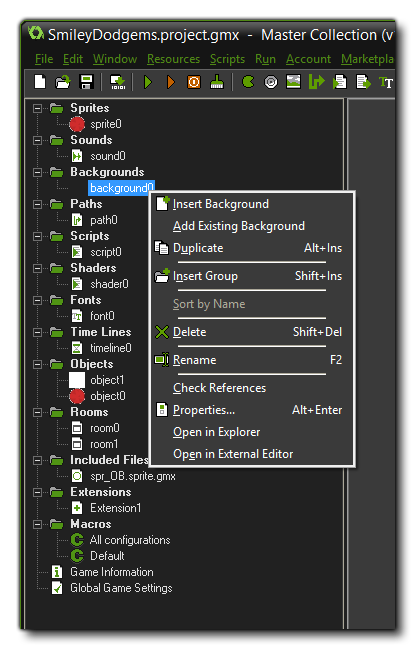

The above image shows the sub-menu that opens when you right-click one of the resources in the resource tree. All resources have the same menu with the same items except the Extensions resource which has an extended sub-menu (see the section on Creating Extensions). The options available to you from this menu are:
- Insert Resource: Insert a new resource in the resource tree and open the editor associated with it.
- Add Existing Resource: This will open the file explorer so you can add a resource from another project file. You can then select any *.gmx format file and it will be added as another resource to the tree with the same properties and name as it had in the previous project. NOTE: Adding an existing resource does not add any extra resources associated with it. For example, adding a room resource will not also add the objects that were present within the room - although it may reference them which will cause an error when the game is run - or if you add an object resource it will not also add the sprite that was assigned to it. therefore when adding existing resources you should be sure to follow the hierarchy of resources and add the sprites first, the backgrounds next, then the objects, etc... until you finally add the rooms.
- Duplicate: This will make a duplicate of the selected resource in the resource tree, which you can then re-name and use.
- Sort By Name: This will sort the resources in the section (or group) selected in alphabetical order.
- Delete: This will delete the resource from the resource tree. before this happens you will be prompted to check if you are sure, and GameMaker: Studio will perform a resource check to see if the resource is referenced in the project anywhere still. If the item being deleted is referenced - for example, you delete a sprite which is used in an object - then you will be alerted and asked if you want to continue.
- Rename: You can rename the selected resource from this option.
- Check References: You can use this option to check and see if any hard references to the resource exist. A hard reference is when the resource is used as part of another resource or has been called in a DnD action - for example, checking the references for a sprite will show all the objects that have that sprite assigned, but will not show any scripts that call the sprite in code.
- Properties: This will open the context specific properties window for the given resource, ie: the sprite editor for sprites, the path editor for paths, etc...
- Open In Explorer: Clicking this will open Windows Explorer at the folder where the *.gmx file for the resource is stored.
- Open In External Editor: Clicking this will launch any external editors associated with the resource, loading the resource in them ready for editing. You can set which editors are assigned to which resource from the Preferences Window